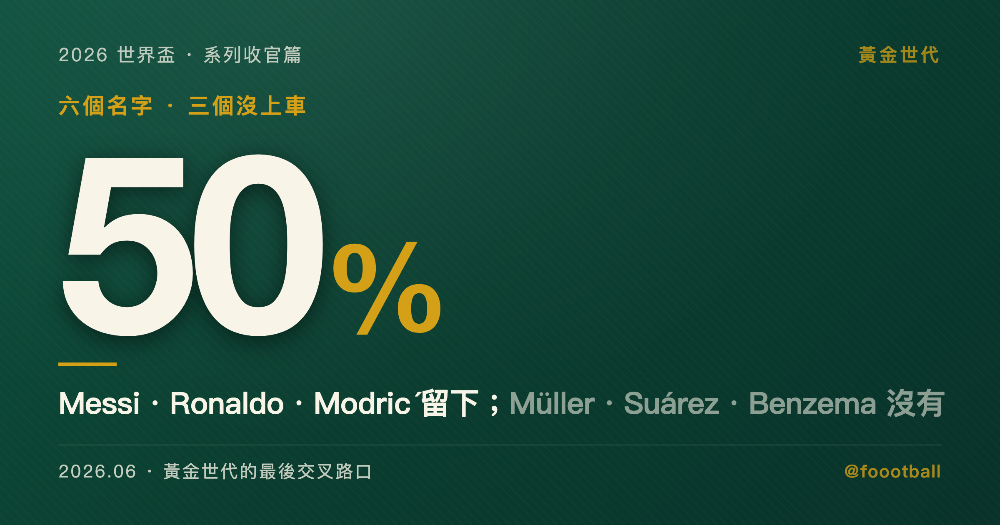

他們沒有選擇退場方式：2026 世界盃與黃金世代的最後交叉路口
2026 世界盃黃金世代六人只剩一半進名單——Messi、Ronaldo、Modrić 仍在，Müller、Suárez、Benzema 缺席。這屆 48 隊、8 場奪冠、跨三國三時區，是史上對老將恢復最不友善的一屆，更像篩選機制而非告別舞台。

§0
2026 世界盃的 26 人名單陸續公布的那幾天，有三個名字沒有出現。
Thomas Müller，36 歲。2025 年夏天從拜仁慕尼黑轉會到 MLS 的溫哥華白浪，德國主教練 Nagelsmann 公布 26 人名單時，他不在上面。沒有召回，沒有公開解釋，名單上直接就沒有他。上一次他站在世界盃的球場上是 2022 年卡達，他代表德國出場 114 分鐘，德國小組賽出局。
Luis Suárez，39 歲。他在 2024 年 9 月主動退出烏拉圭國家隊，那段時間他跟主教練 Bielsa 的關係在公開場合幾度摩擦。2026 年世界盃前他鬆口了，公開說想再回去踢最後一屆，但烏拉圭公布名單時沒有他。這個在 2010 年世界盃用手擋球拯救烏拉圭、又在 2014 年咬了對手一口的男人，他的世界盃故事結束在「自己先轉身離開、再也回不去」的位置。
Karim Benzema，38 歲。2022 年世界盃前夕因大腿傷退出法國名單後再也沒有回來。他公開表示，如果法國隊徵召，他願意回去踢世界盃，但 Deschamps 的 2026 名單沒有他。2022 年金球獎得主的世界盃告別不是一場比賽，是一通沒有被接的電話。
三個人都曾是世界盃主角。三種結局 — 被遺忘、回不去、被沉默。現在他們是觀眾。
但另外三個名字還在名單上。
Lionel Messi，38 歲（賽事期間將滿 39），第 6 屆。Cristiano Ronaldo，41 歲，第 6 屆。Luka Modrić，40 歲，第 5 屆。
主流敘事把他們的在場讀成「黃金世代的最後舞台」。這個讀法感覺對，但結構上有兩個問題。第一，2026 世界盃不是告別舞台，它是史上最殘酷的一屆。第二，只有活下來的人才有告別，而 Müller、Suárez、Benzema 剛告訴我們，大部分人活不到那裡。
§1
2006 年世界盃，德國。
18 歲的 Lionel Messi 在小組賽對塞爾維亞與蒙特內哥羅的第 75 分鐘替補上場，第 88 分鐘打入他的第一個世界盃進球。同一屆，21 歲的 Cristiano Ronaldo 帶著葡萄牙打入四強，在對英格蘭的八強戰中對著隊友 Wayne Rooney 紅牌下場的方向眨了一下眼睛，那個畫面到今天還被反覆播放。同一屆，20 歲的 Luka Modrić 入選克羅地亞大名單，得到兩次替補出場機會，場上合計不到半小時。
那是 2006 年。沒有人知道 Messi 會拿 8 座金球獎，沒有人知道 Ronaldo 會進超過 900 個球，沒有人知道 Modrić 會在 33 歲拿到金球獎、在 37 歲帶領克羅地亞從世界盃小組賽一路走到第三名。2006 年的他們是潛力，不是紀錄。他們的世界盃故事還沒有開始。
2026 年，二十年後，這三個人都還在。而且不只還在，是以一種歷史上從未有過的方式還在。
Messi 的世界盃紀錄：6 屆出場（男子史上最多，與 Ronaldo 並列）、26 場出場（男子史上最多）、13 球 8 助攻、1 座冠軍（2022 卡達）、2 座世界盃金球獎（2014、2022）。Ronaldo 的紀錄：6 屆出場（與 Messi 並列）、22 場 8 球、史上首位在 5 屆不同世界盃都有進球的球員，距離尤西比奧的葡萄牙 WC 進球紀錄只差 1 球。Modrić 的紀錄：5 屆出場、2018 金球獎（帶領克羅地亞首進決賽）、2022 銅球獎、接近 200 場國家隊出場。
他們之間分了 14 座金球獎、接近 1,900 個生涯進球、以及一整個時代的敵意和尊敬。他們在歐冠決賽交手、在聯賽裡互相追逐、在國家隊裡各自承擔一個國家的期望。在他們之前，沒有兩個球員同時打到第 6 屆世界盃。在他們之後，以現代足球的物理強度和賽程密度，也很可能不會再有。
但這不是致敬專欄。二十年的弧線很美，但美的弧線不能代替一個具體的問題：39 歲到 41 歲的身體，在 2026 世界盃的物理框架裡，到底能不能撐住。
這個問題有三種不同的備戰邏輯。
§2
Messi 在 2023 年夏天離開巴黎聖日耳曼後去了 Inter Miami。
Inter Miami 在 MLS 踢球，意味著賽程密度低於歐洲五大聯賽、旅行距離集中在北美、對抗強度在世界職業足球的光譜上偏低端。Messi 2026 賽季在 Inter Miami 截至 5 月踢了 17 場、13 球 6 助攻，包括達成 900 生涯進球的里程碑。從進球效率來看完全沒有問題。但問題不在進球效率，在於他的左腿後肌。
2025 年 8 月 Leagues Cup 傷過一次。2026 年 2 月對 Barcelona SC（厄瓜多爾的 Barcelona，不是加泰隆尼亞那個）傷過一次。5 月 24 日，世界盃開幕前 18 天，他在對費城聯的比賽第 73 分鐘抓著左腿後肌被替換下場。Inter Miami 說「預防性措施，沒有結構性損傷」。5 月 28 日，阿根廷公布最終 26 人名單，Messi 入選並擔任隊長，將第 6 度站上世界盃 — 男子史上只有他和 Ronaldo 做到。Scaloni 淡化了傷情。
即將滿 39 歲的 Messi 選擇 MLS 作為他的保鮮策略。低強度環境換取身體壽命，但低強度的代價是你的肌肉適應了低強度，當世界盃的物理節奏突然拉高到頂級水準，那條反覆受傷的左腿後肌，記住的是 MLS 的節拍還是世界盃的節拍，目前沒有人知道。
Ronaldo 在 2023 年 1 月去了沙烏地阿拉伯的 Al-Nassr。
他的保鮮策略邏輯上跟 Messi 類似但更極端 — 沙烏地職業聯賽的競技水準比 MLS 再低一段。但 Ronaldo 用一個極端的個人產出來彌補這個落差：2025-26 賽季沙烏地聯賽 30 場 28 球 2 助攻，每 87 分鐘 1 個進球貢獻，並在本季拿下他在 Al-Nassr 的首座聯賽冠軍。41 歲。他在 2025 年 11 月接受 CNN 專訪時說「definitely 是最後一屆」，又說「我還剩一兩年，職業生涯末期近了」。2026 年 2 月右腿後肌傷過一次，「比預期嚴重」，但完全恢復後復出上演梅開二度。
41 歲的 Ronaldo 選擇沙特作為他的保鮮策略。金錢加上低強度環境，然後用絕對進球數量來維持自己的歷史地位。風險跟 Messi 一樣：沙特聯賽的物理頻率跟世界盃淘汰賽的物理頻率之間，隔了一整個量級。
Modrić 的選擇不一樣。
2025 年 7 月，他在皇家馬德里效力 13 個賽季後，自由轉會到 AC Milan。40 歲，Serie A，義大利。
皇馬願意讓他以遞減的角色慢慢淡出，但 Modrić 要的是繼續踢主力。他選擇了 AC Milan，簽下一年合約——而從後續的使用方式看，這不是去掛名養老。不是 MLS，不是沙特，是歐洲五大聯賽裡唯一願意讓一個 40 歲中場打主力的俱樂部。
Milan 本季 Serie A 他踢了約 2,700 分鐘，是隊上出場時間排前五的球員，先發常客。2 球 3 助攻的數字不華麗，但他的價值從來不在進球數字上 — 他是場上節拍器，是中場的時間管理者，是讓隊友多出半秒思考空間的那個人。
40 歲的 Modrić 選擇留在歐洲頂級聯賽作為他的保鮮策略。代價是磨損更大、受傷風險更高、每週都要面對比 MLS 和沙特更快的對抗節奏。收益是身體不會忘記頂級比賽的頻率。當他走進世界盃第一場對英格蘭的比賽（Group L，6 月 17 日，阿靈頓），他的肌肉記憶跟過去 10 個月在 Serie A 面對的物理強度是連續的，不是跳級的。
這裡還有第四個參照。Neymar，34 歲，巴西。他的保鮮策略跟前三個人都不一樣 — 2025 年初回到母會山度士，選擇在巴甲（巴西甲級聯賽）踢球。不是 MLS，不是沙特，不是歐洲五大，是南美本土聯賽。15 場 6 球 4 助攻，但 2023 年 10 月的前十字韌帶撕裂始終是懸在他職業生涯上方的結構性風險。Neymar 的故事已在本系列前一篇詳述，但放在這裡是為了把問題攤開：四個不同的競技環境、四種不同的身體磨損曲線、四種不同的「我覺得我可以撐到世界盃」的賭法。
四種保鮮策略，四個不同賭注。共同的問題只有一個：38 歲到 41 歲的身體，能不能撐過一屆 48 隊制的世界盃。
而這屆世界盃的物理框架，恰好是史上對老將最不友善的一版。
§3
2026 世界盃可能是現代足球史上對球員恢復最不友善的一屆世界盃。
48 隊參賽，12 個小組各 4 隊。小組前 2 名加 8 個最佳第三名晉級 32 強淘汰賽，然後一路打到決賽。奪冠需要 8 場比賽，比 2022 卡達（32 隊 / 7 場奪冠）多一場。這多出來的一場，對 25 歲的球員來說是一場普通的淘汰賽加時。對賽事期間將滿 39 歲的 Messi 來說，是他那條左腿後肌在 7 月中旬的最高溫天還得多撐 90 到 120 分鐘。
賽程跨 39 天，從 6 月 11 日墨西哥城的開幕戰一路到 7 月 19 日紐約大都會人壽球場的決賽。比 2022 卡達的 29 天多了 10 天。16 座主辦城市分布在三個國家、三個時區 — 從溫哥華的太平洋時區到邁阿密的東部時區橫跨 3 小時。氣候科學家的分析（Scientific American 報導）指出，104 場比賽中約有 26 場面臨危險高溫條件。FIFA 在 2025 年 12 月宣布強制每半場進行 3 分鐘的補水暫停，這個規則本身就說明了主辦方知道溫度會是問題。
對年輕球員來說，這些數字是挑戰。對 38 歲以上的球員來說，這些數字是篩選機制。這不是一屆讓你「告別」的世界盃，是一屆讓你先活下來再說的世界盃。
如果你是 Messi，你的三場小組賽有兩場在達拉斯，然後淘汰賽可能要從達拉斯飛到費城再飛到洛杉磯再飛到紐約。如果你是 Ronaldo，你從休斯頓開始，可能在某個環節要飛到西雅圖或溫哥華。如果你是 Modrić，你在阿靈頓開球，然後看淘汰賽把你帶到美國地圖的哪一端。每一次飛行都是 3 到 5 小時的座位時間、1 到 3 小時的時差調整、以及一組 38 歲以上的肌肉群在高空座艙壓力下的微損累積。
老將最大的結構性劣勢不是速度或力量的衰退。是恢復時間。年輕球員打完一場 90 分鐘的高強度比賽，48 到 72 小時後基本回到備戰狀態。38 歲以上的球員，同樣的恢復週期可能需要 96 到 120 小時。但 48 隊賽制下小組賽三場之間的間隔大約 4 到 5 天，淘汰賽階段 3 到 4 天。換句話說，當你的恢復週期長於賽程間隔，你從第二場開始就帶著上一場的疲勞在踢，而且這個疲勞是累積的、不可逆的。
這就是為什麼 48 隊賽制是一個反告別格式。它不是為「讓 39 歲的球員打完最後一場」設計的。它是為「讓有深度的 26 人陣容在 8 場比賽裡輪轉出最優組合」設計的。這套賽制的實際效果，是更有利於有深度的陣容與輪換能力，而不是保證老將拿到一場完整的告別。
2026 年 5 月，數十名現役球員聯署了一封公開信，呼籲 FIFA 強化高溫和工作量保護協議。他們的訴求很具體：比賽場次太多、恢復時間太短、高溫城市佔比太高。FIFA 回應了補水暫停，但沒有減少場次。
Messi、Ronaldo、Modrić 走進的不是一座告別劇場，而是一座為年輕、深度、高輪轉量身定做的競技熔爐。
§4
回到那三個沒有出現的名字。
Thomas Müller 在拜仁慕尼黑踢了 17 個賽季、出場超過 700 次、拿了 13 個德甲冠軍和 2 座歐冠。他的世界盃履歷包含 4 屆出場、2010 年南非金靴獎、2014 年巴西冠軍隊成員。他不是一個邊緣球員而是德國足球過去 15 年的核心符號之一。
2025 年夏天他離開拜仁去了 Vancouver Whitecaps。不是像 Messi 去 Inter Miami 那樣帶著聚光燈和天價薪水，是安靜地簽了一份 MLS 合約、在溫哥華訓練、在不太有人看的聯賽裡踢球。他做了跟 Messi 和 Ronaldo 一樣的選擇 — 離開歐洲、降低強度、保存身體 — 但結局不一樣。Nagelsmann 公布德國 26 人名單的時候，名單上沒有他。沒有電視鏡頭拍到他看到名單的反應，沒有記者會上的致敬，沒有球迷在場外唱他的名字。36 歲的世界盃金靴獎得主在溫哥華，看著別人的名字在螢幕上滾動。保鮮策略跟 Messi 一樣，但結果完全相反。
Luis Suárez 的故事更尖銳。2024 年 9 月，他在一連串與主教練 Bielsa 的公開摩擦之後，主動宣布退出烏拉圭國家隊，以隊史最佳射手的身份轉身離開。但到了 2026 年世界盃前，他鬆口了，公開說想再回去踢最後一屆。烏拉圭沒有召他回來。39 歲的 Suárez 走的不是「被遺忘」的路線，是「回不去」 — 他自己先關上了門，等想再推開的時候，門後已經沒有人。
Benzema 的版本最安靜也最冷。2022 年世界盃前夕他因大腿傷退出法國名單，之後法國在沒有他的情況下打入決賽、在加時賽跟 Messi 的阿根廷踢成 3 比 3、在點球大戰中敗北拿了亞軍。Benzema 沒有出現在那場決賽的任何一個畫面裡。他再也沒有回來。2022 年金球獎得主公開表示願意回歸，但 Deschamps 的 2026 名單沒有他；法國隊也沒有用任何官方聲明替這段關係做出新的收束。法國足協沒有發布任何關於 Benzema 的官方聲明，沒有「感謝他的付出」那種禮貌性結語，什麼都沒有。38 歲的 Benzema 走的是「被沉默」— 不是被公開拒絕，是被放在一個永遠收不到回電的等待室裡，直到等待本身變成了答案。
三種退場方式，共通點是一個：他們都沒有選擇。退場的敘事權不在球員手上，而在教練的名單裡、在更衣室的人際動態裡、在一通沒有人接的電話裡。
Müller 選擇了去 Vancouver Whitecaps 繼續踢球，但他沒有選擇被排除在德國的世界盃名單之外。是 Nagelsmann 選擇不帶他。Suárez 自己選擇了退出，但他沒有選擇「想回來的時候回不來」。Benzema 沒有選擇 Deschamps 的沉默。他選擇了等待，但等待的另一端什麼都沒有。
告別敘事是一種倖存者偏差。媒體在寫「Messi 的最後舞台」「Ronaldo 的光榮告別」的時候，預設了「只要你站上去，就會有掌聲」。但 Müller、Suárez、Benzema 的存在提醒了一件事：黃金世代有六個人，但只有三個人走到了最後。另外三個人的告別不是站在世界盃球場上聽掌聲，是坐在電視機前看別人的名字。
當你只看到 Messi、Ronaldo、Modrić 站在世界盃名單上的那一刻，你看到的是「偉大的老將仍然屹立」。當你同時看到 Müller、Suárez、Benzema 不在名單上，你看到的是一個更誠實的比例：這六個人裡，剛好一半沒能站上名單。
只有活下來的人才有告別。而活下來，不只跟偉大或努力有關——也跟教練的名單、更衣室的關係、傷病與時機，跟一通電話有沒有人接有關。
§5
（以下各隊賽程日期為主辦地當地時間，台北時間約需再加 13–15 小時。）
Messi 的第一場比賽在 6 月 16 日，堪薩斯城，Group J，對阿爾及利亞。第二場 6 月 22 日達拉斯，對奧地利。第三場 6 月 27 日達拉斯，對約旦。阿根廷是衛冕冠軍加小組最大熱門，三場理論上都應該贏。但兩場在達拉斯 — 6 月下旬的達拉斯日間溫度常超過攝氏 35 度，即使 AT&T 體育場有可伸縮屋頂和空調系統，賽前熱身、動線移動和媒體區活動仍在室外完成。39 歲的身體在 35 度的環境裡，跟 25 歲的身體在同一個環境裡，消耗的是完全不同量級的代謝資源。Scaloni 必須在「讓 Messi 打滿每場 90 分鐘」和「保護他的左腿後肌讓他撐到淘汰賽」之間做取捨。在 Inter Miami 他可以被管理、被輪休、被保護。在世界盃小組賽他是 10 號，觀眾買票是來看他的，轉播權是以他的名字賣的。管理和保護在世界盃會變得困難得多。
Ronaldo 的第一場在 6 月 17 日，休斯頓，Group K，對剛果民主共和國。休斯頓 6 月的平均高溫在 33 到 35 度之間，NRG 體育場有空調但容量 72,000 人的體感仍然悶熱。41 歲的 Ronaldo 在沙烏地阿拉伯踢了兩年半的球，理論上已經適應了高溫環境，但沙烏地聯賽的比賽通常在晚間進行，跟世界盃小組賽可能排在下午的場次是不同的溫度體驗。
Modrić 的第一場是最硬的。6 月 17 日，阿靈頓（達拉斯衛星城），Group L，對英格蘭。英格蘭是 2024 歐洲盃亞軍、本屆世界盃奪冠熱門之一。40 歲的 Modrić 在 AT&T 體育場，面對的是 Bellingham、Saka 這一代平均年齡只有二十出頭的英格蘭中前場。
系列前作足球-05 已經分析過的一個命題在這裡具現化了：Haaland 26 歲、Messi 39 歲、Modrić 40 歲，三個人同時出現在 2026 世界盃。如果各自小組出線，在淘汰賽路徑中他們有可能相遇。足球史上極少有「世代交棒」能精確發生在一場 90 分鐘的比賽裡。但 2026 年 7 月的某一天，一個 26 歲的 Haaland 可能在某個美國體育場的對面站著 39 歲的 Messi 或 40 歲的 Modrić。
新世代不需要跟舊世代打招呼。淘汰賽就是打招呼的方式。
這裡面最有意思的場景可能不是 Messi 對 Haaland，是 Modrić 對英格蘭。英格蘭的中前場 — Bellingham 22 歲、Saka 24 歲 — 比 Modrić 小了將近二十歲。2018 年世界盃半決賽克羅地亞對英格蘭，Modrić 用整場比賽的節奏控制把克羅地亞拖進加時賽，最後曼朱基奇在第 109 分鐘打入致勝球，英格蘭出局。八年後同一個人回來了，這次他 40 歲，站在他面前的已經不是同一批球員。對英格蘭來說，這不是復仇，是時間在替他們復仇。對 Modrić 來說，這是他確認自己還不還在的第一場考試。
§6
歷史上只有一個 40 歲以上的人在世界盃奪冠。
1982 年西班牙世界盃，義大利門將 Dino Zoff 以 40 歲之齡帶隊捧杯。他的紀錄至今沒有人打破。
Ronaldo 41 歲。Modrić 40 歲。Neuer 40 歲。波赫的 Džeko 也是 40 歲。這屆世界盃可能是歷史上 40 歲以上球員密度最高的一屆 — 至少有四個人站在 Zoff 的紀錄門檻上。從年齡數字上看，他們都有機會挑戰那個 1982 年的座標。但 1982 年的世界盃跟 2026 年的世界盃是兩個完全不同的物理環境。
1982 年：24 隊參賽，義大利奪冠踢了 7 場（3 場第一階段小組 + 2 場第二階段小組 + 半決賽 + 決賽）。單一國家主辦（西班牙），所有比賽都在同一個國家的不同城市之間移動，沒有跨國航班、沒有時區切換。Zoff 是門將，物理消耗曲線跟外場球員根本不同。
2026 年：48 隊參賽，奪冠需要 8 場比賽（比 1982 多 1 場）。三國聯合主辦，16 座城市，3 個時區。Ronaldo 和 Modrić 是外場球員，每場 90 分鐘的跑動距離、加速次數、身體對抗頻率都遠高於門將。
把 Zoff 的 40 歲拿來類比 Ronaldo 的 41 歲，年齡數字相似，但結構環境不同。場次差距不大（7 vs 8），但真正的差距在兩個維度：第一是位置 — Zoff 站在門線上，Ronaldo 和 Modrić 每場跑 10 到 12 公里；第二是移動 — 1982 年所有比賽在同一個國家的高速公路車程內完成，2026 年是跨三國的航班加時差。
除了 Zoff，還有一個名字值得放在這裡。1994 年世界盃，42 歲的喀麥隆前鋒 Roger Milla 上場比賽，至今是世界盃歷史上最年長的外場球員出場紀錄和進球紀錄。2026 年，Ronaldo 41 歲、Modrić 40 歲、波赫的 Džeko 40 歲 — 他們都在 Milla 的紀錄射程之內。但 Milla 在 1994 年打了 3 場小組賽、合計上場不到 90 分鐘，是替補角色。Ronaldo 和 Modrić 不是替補，他們是各自國家隊的絕對核心，他們需要的不是「上場創造紀錄」的 60 分鐘，是「帶隊走到最後」的 720 分鐘。
所以 Dino Zoff 和 Roger Milla 的影子在這裡不是一個「他們也可以」的勵志對照，是一個「物理環境已經不同了」的結構對照。1982 年的 40 歲撐了 7 場但他站在門線上，1994 年的 42 歲只需要在 3 場小組賽裡替補上場不到 90 分鐘，2026 年的 41 歲要以外場核心撐 8 場乘以 90 分鐘加跨國移動。差的不是年齡，是場次乘以恢復週期再除以物理環境的乘法。
如果你把世界盃奪冠路徑的物理消耗畫成一條曲線，橫軸是場次、縱軸是累積疲勞，38 歲以上球員的曲線從第 5 場開始就會跟 25 歲球員的曲線分叉。分叉的原因不是體力，而是恢復。年輕球員可以在 72 小時內把疲勞值壓回基線，老將需要 96 到 120 小時。但淘汰賽的間隔只有 72 到 96 小時。這意味著老將從第 5 場開始就帶著赤字在踢，而且赤字是複利的。
那他們知不知道。
Ronaldo 知道。他說「definitely 是最後一屆」，用的是肯定句不是「我要拼一拼」。Modrić 知道。他說「我清楚我的年紀，這是我在國家隊的最後一次大賽」，用的是終結式陳述。Messi 知道。他說「我不認為我會再打另一屆世界盃。以我的年紀，這很合邏輯」。
三個人都清楚自己走進的是什麼。他們的公開發言裡沒有「光榮告別」「不留遺憾」這類致敬專欄的用語，有的是「以我的年紀這很合邏輯」「definitely 最後一屆」「我清楚我的年紀」— 是計算過的陳述，不是情感宣言。他們走進的不是告別巡演，是最後一次賭注。賭注的對象不是冠軍，是「我的身體還能不能在這個量級的比賽裡做到我腦袋裡知道該怎麼做的事」。
§7
2006 年德國世界盃，一個 18 歲的阿根廷替補在對塞爾維亞與蒙特內哥羅的第 75 分鐘上場，第 88 分鐘打入他生涯第一個世界盃進球。同一屆，一個 21 歲的葡萄牙前鋒帶領國家隊打入四強。同一屆，一個 20 歲的克羅地亞中場拿到兩次替補機會，場上總共不到半小時。
二十年後，那個阿根廷替補已經 38 歲、13 個世界盃進球、26 場出場、1 座冠軍、900 個生涯進球。那個葡萄牙前鋒已經 41 歲、8 個世界盃進球、22 場出場、在 5 屆不同世界盃都有進球、距離尤西比奧的葡萄牙世界盃進球紀錄只差最後 1 球。那個克羅地亞中場已經 40 歲、一座金球獎、帶領一個 400 萬人口的國家進過世界盃決賽、離開了待了 13 年的皇家馬德里、在 AC Milan 繼續踢球。
他們都還在。二十年的時間，足以讓一整批年輕球員從出生長到踢世界盃的年紀。2006 年出生的孩子現在 20 歲，有些人可能正在世界盃的球場上追著 Messi 和 Ronaldo 跑。時間的壓縮感在這裡最清楚：三個人的職業跨度長到覆蓋了另一代人的完整成長週期。
但 Müller 不在了。Suárez 不在了。Benzema 不在了。
三個人坐在電視機前面。三個人站在球場上。六個人曾經同屬一個時代，現在一半的人已經走了。
Müller 選擇了 Vancouver，但沒有選擇被留在名單外。Suárez 沒有選擇那場衝突。Benzema 沒有選擇 Deschamps 的沉默。
Messi、Ronaldo、Modrić 也沒有選擇接下來的 8 場比賽、39 天、16 座城市、3 個時區、35 度的達拉斯下午。
他們沒有選擇退場方式。但他們選擇了站在那裡。
6 月 11 日，墨西哥城阿茲特克球場，2026 世界盃開幕。6 月 16 日，堪薩斯城，Messi 的第一場。6 月 17 日，休斯頓，Ronaldo 的第一場。同一天稍晚，阿靈頓，Modrić 的第一場。
三個 2006 年的少年，走進 2026 年的熔爐。時間沒有給他們告別的劇本。時間只給了他們一張入場券和一個殘酷的問題：你還撐得住嗎。
常見問題
2026 世界盃黃金世代哪些老將入選、哪些缺席？
入選的有梅西（38 歲，第 6 屆）、C 羅（41 歲，第 6 屆）、莫德里奇（40 歲，第 5 屆）；缺席的有穆勒（36 歲，德國名單未列）、蘇亞雷斯（39 歲，2024 年自行退出後回不去）、Benzema（38 歲，2022 退出後未再獲徵召）。六人剛好一半走到最後。
為什麼說這屆世界盃對老將特別嚴苛？
48 隊賽制奪冠需踢 8 場（比 2022 多一場）、賽程 39 天、橫跨美加墨三國三時區、約 26 場面臨危險高溫。38 歲以上球員的恢復需 96–120 小時，常長於淘汰賽 72–96 小時的間隔，從第五場起就帶著累積疲勞在踢。
40 歲以上球員在世界盃奪冠過嗎？
有。1982 年義大利門將 Dino Zoff 以 40 歲奪冠，紀錄至今未破。但他是門將、賽事單國舉辦踢 7 場；2026 年的 C 羅、莫德里奇是外場核心、需撐 8 場加跨國移動，物理環境與 1982 不同。（最年長外場出場／進球紀錄是 1994 年 42 歲的 Roger Milla，但他是替補。）